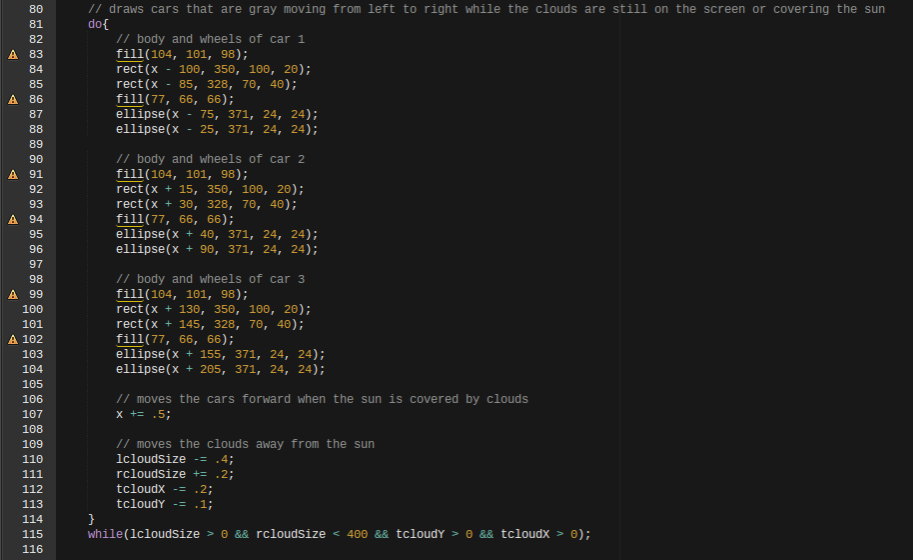
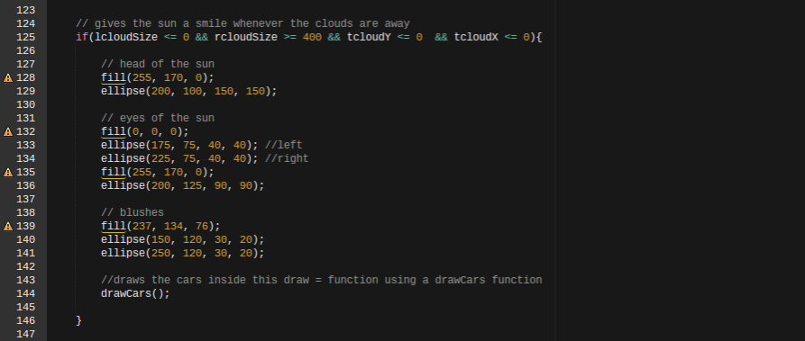

The Meaning Behind My Page
The page I created starts off with 3 clouds covering the sun.
During this time, 3 cars are driving on the bottom with gray colors and black wheels.
After the clouds disappear, the sun comes out and changes the colors of the cars.
My page focuses on the thought that the sun usually changes the mood of people and how they view things.
In my page, it shows that the clouds are covering the sun, which causes the cars to look gray and dark.
When the sun comes out, I gave it a smile to show that it always seems to smile whenever it comes out.
Additionally, I changed the color of the cars to be more radiant and have more variety.
The general idea behind the changing of colors in the cars is how the sun gives a lot of life on Earth and seems to give more color to nature along with making the minds of humans happier.
Some Codes I Used
In my page, I used a lot of if statements that activated the different stages of the page.
For example, on my page, the sun grows at the same time the clouds moved out of the way. I used an if statement there to emphasize the size ofthe sun more.
Another example of an if statement I used is when the cars changed colors the same time the sun started to smile.
Another code I used allowed the viewer of the page to interact with the page.
To add a loop, I used a while loop that made the cars move forward as long as the clouds stayed on the screen.
This loop helped make the first phase of the page and provided the transition to the second phase of the page.
To allow the viewer of the page to interact, I added mouseX and mouseY to an if statement to draw a car if the cursor is above 300 following the y-axis.
I also used a while loop to keep the cars a certain color and driving forward as long as the couds are on the screen.
Lastly, I used a function to draw out some codes for cars out of the draw function and grouped them together more.

An example of the while loop I used that kept the clouds moving and cars driving forward.

This if statement gives the sun a smile and happy face when the clouds move out of the way.
Certain Choices I Made
Choosing a theme to go on was definitely something I had to think hard on. Another hard choice I had to make was what object should change color to represent the radiance that the sun gives.
For example, I could've chosen birds instead of cars, or I could've chosen plants instead of cars.
I made my choice by picking something most people have, and I came up with cars.
Another choice I had to make was how I could add interactions onto the page.
To make my choice, I tried to use a mouseClicked function, but it just disappeared everytime I clicked because the beckground reset every time.
The second choice I made was setting an if statement that drew a car following your cursor.
I did this using an if statement that only worked if mouseY was above 300, or the bottom 1/4 of the screen.
What I Learned
I learned many things such as if statements that allowed me to start different reactions based on the position of the clouds.
I also learned how to use functions that drew certain codes out of the draw function and gathered them together.
Another thing I learned was using a while loop that continued redrawing cars and clouds moving in a certain direction as long as the clouds stayed in a certain location.
One thing that I probably won't forget in a while is how to use mouseX and mouseY to have a certain picture, object, etc. draw based on the position of the cursor.